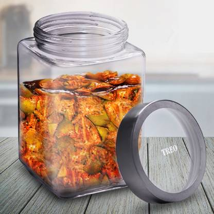

THANKSGIVING MENU
November 20, 2018
Thanksgiving is one of our favorite holidays around here at We love having family and friends gather together to catch up, relax, and most importantly… eat! We believe in crafting a menu that incorporates traditional favorites with a twist on flavor. Check out our Thanksgiving menu below and let us know how you incorporate pickles into your holiday meals.
APPETIZERS
For starters, we like to keep things simple but still tasty. You want dishes that will help tide people over until the main course but also won’t fill them up too much. These quick and easy Thanksgiving appetizers recipes can be thrown together in minutes so you can turn your attention back towards the turkey (or not!).
PICKLES STORED IN JARS
This was one of our favorite dishes from last year’s summer Recipes.The whole point of canning pickles is to store them in jars with sealed lids on a pantry shelf. As for all home-canned goods, those jars and lids must be specifically designed for canning. Once your jars have cooled and the flat lids have sealed, remove and wash the rings and wipe down the jars with a damp cloth
INGREDIENTS
- 1 and 1/2 kg or Boneless Chicken
- salt 100grams
- Red Chilly Powder : 100 grams
- 4 cloves garlic, crushed and minced
- Coriander Seeds 100 grams
- poppy seeds and cashew 50grams
- lemons 6big
INSTRUCTIONS:
- Cook cleaned Chicken pieces adding 1 tsp Turmeric Powder and 1/2 tsp Salt till water is evaporated (do not add extra water)
- Fry Cashews,poopy seeds,cumin,coriander seeds for 1 min in high flame
- transfer them to a jar and blend all the above ingerdents
- boil the chicken and seperate all the bones
- Extract and filter juice from 6 Lemons,blend ginger and garlic
- Heat 1/4 kg Oil in a frying pan, slowly add boneless Chicken Pieces to it, Fry till golden color in high flame, once fried take them in a big mixing bowl
- Fry 100 grams Ginger garlic paste in the remaining heated oil for 2 min in high flame. Off the flame & keep it aside
- Now add all the dry ingredients to the chicken
- Mix all the ingredients properly, Heat 1/4 kg oil and add to the pickle for storage (It is best to store in Refrigerator in a air-tight container)
GARLIC Pickle
Garlic pickle is an easy-to-make recipe which is packed with salty, sour and spicey flavours. If you like pickles we can guarantee you will love it. The aroma of the Indian spices makes it so fresh and delicious. You can serve this side dish recipe with a dish of your choice to make it even more mouth-watering. Occasions like kitty parties, game nights and family get-togethers are apt to serve this pickle recipe and will surely impress everyone with its taste. You must try this easy recipe for your loved ones, it will give your taste buds a delectable experience.
INGREDIENTS
- 1/2 cup garlic
- 1/2 tablespoon chilli powder
- 2/3 tablespoon fenugreek seeds
- 1/6 cup lemon juice
- 1/3 cup gingelly oil
- salt as required
- 1/2 tablespoon cumin seeds
- 2/3 tablespoon coriander seeds
INSTRUCTIONS:
- Firstly, take a chopping board and peel the garlic cloves. Now chop them finely. Take a frying pan and add coriander seeds, fenugreek seeds and cumin seeds. Roast them without oil. Once roasted, keep them aside.
- Now, take a heavy-bottomed saucepan and pour 2 tablespoon oil in it. Once heated, add chopped garlic cloves into it. Saute it for 2 minutes. On the other hand, take a grinder and grind the coriander, cumin and fenugreek seeds into a fine powder.
- Add the ground mixture into the saucepan and saute for 3 minutes. Now add salt, chilli powder, turmeric and lemon juice. Cook the mixture until the consistency is thick.
- Now add the remaining quantity of oil into the thick mixture and cook for 10 minutes. Let it cool and pour the mixture into glass bottles. Serve!
Amla ka Aachar
The Indian gooseberry (amla) is used to make a sweet and sour pickle. Gooseberries are a great source of vitamin C. They work well for hair, skin and weight loss.
DRUMSTICK PICKLE
Try this delicious drumstick pickle. Made with a fine paste of methi, sarson, red chillies and tamarind, it will leave you asking for more.Ditch the mangoes and lemons that have traditionally been packed in pickle jars, here is a new kid on the block - drumsticks. Don't give this one a miss!
INGREDIENTS
- 15 drumsticks
- 1 tsp methi (fenugreek seeds)
- 3 tsp mustard seeds
- 20 dried red peppers
- 1/4 tsp asafoetida
- 1 Tbsp turmeric powder
- 100 gm tamarind
- 2 Tbsp vinegar
- 3 pods of garlic, peeled
- 3 Tbsp salt
- 1 cup refined oil
- 2 Tbsp sesame oil
INSTRUCTIONS:
- Scrape the drumsticks and cut as desired.
- Steam them for 5 minutes.
- Make a fine paste of methi, sarson, red chilies and tamarind.
- Heat oil and add garlic, ground ingredients, heeng, salt and haldi.
- Mix well and add drumsticks.
- Cook on low flame for 5 minutes. Take it off the stove and cool.
- Then add vinegar and sesame oil.
- Transfer into a clean jar.
- Keep the preparation refrigerated for at least 3 days before serving.
GHOBI SHAIGAM KA AACHAR
Cauliflower and turnip pickle mixed with assorted spices, jaggery and mustard oil is a winter favourite. It is a perfect sweet and spicy combination of a delicious treat to accompany your daily meal.
INGREDIENTS
- 500 gm shalgam (turnips), scraped and sliced
- 750 gm Gobi (cauliflower), cut into florets
- 750 gm gajar (carrots), scraped and cut into pieces
- 60 gm lassan (garlic), peeled, coarsely pounded
- 60 gm ginger, peeled and chopped, coarsely pounded
- 60 gm garam masala, powdered
- 60 gm pissi rai (powdered mustard seeds)
- 20 gm chilli powder or to taste
- 60 gm salt
- 180 gm sirka (vinegar)
- 125 gm gur (jaggery)
- 250 gm sarson ka tel (mustard oil)
INSTRUCTIONS:
- Place the oil to heat in a large kadahi (or wok) and the vinegar and gur in a saucepan on another burner.
- Bring the vinegar to a boil and then simmer to dissolve the gur.
- When the oil is heated enough for a piece of vegetable thrown in to come up at once, keeping the heat on high, add the ginger and the garlic, and stir fry till a light brown.
- Add the shalgam, gobhi and gajar and continue stirring over high heat. This has to be stirred long enough to evaporate the water in the vegetables.
- Add the powdered spices and salt, mix well, again over high heat, and then add the vinegar solution. Let it come to a boil and shut off the heat.